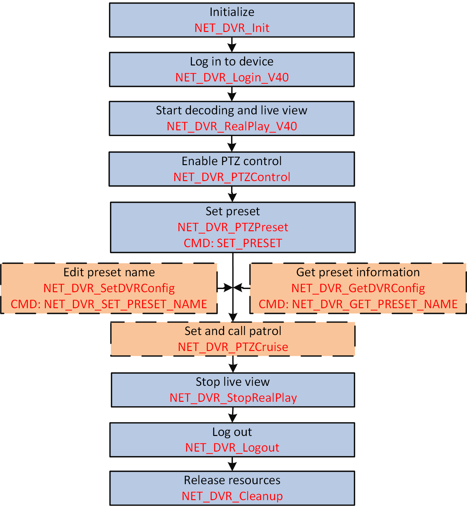

Perform PTZ control to realize the pan, tilt, and zoom functions of cameras,
set the presets for specific monitoring areas to fast switch the camera as needed, and group
the user-defined presets as a scanning track for patrol.

Figure 1 Calling Process of
Performing PTZ Control
-
Call NET_DVR_RealPlay_V40 to start live view.
-
Call NET_DVR_PTZControl to enable PTZ
control.
-
Set the preset(s).
-
Control the camera to move to a specific position.
-
Call NET_DVR_PTZPreset with the command of
SET_PRESET (command No.: 8) to set the position
as a preset.
- Optional:
Repeatedly call NET_DVR_PTZPreset with the command of
SET_PRESET (command No.: 8) to set multiple
presets.
- Optional:
Perform the following operation(s) after setting the presets.
| Option |
Description |
|---|
|
Call Preset
|
Call NET_DVR_PTZPreset with
GOTO_PREST (command No.: 39) to call the
configured preset.
|
|
Delete Preset
|
Call NET_DVR_PTZPreset with
CLE_PREST (command No.: 9) to delete the
preset.
|
|
Get Preset Information
|
Call NET_DVR_GetDVRConfig
with NET_DVR_GET_PRESET_NAME (command No.: 3383)
to get the preset name and predefined PTZ information, which is
returned by lpOutBuffer in NET_DVR_PRESET_NAME.
|
|
Edit Preset Name
|
Call NET_DVR_SetDVRConfig
with NET_DVR_SET_PRESET_NAME (command No.: 3382)
and set lpInBuffer to NET_DVR_PRESET_NAME for
editing the preset name.
|
- Optional:
Call NET_DVR_PTZCruise with different commands to add the
configured presets to the patrol, and set the scanning speed between two presets
and the dwell time at a preset.
Note:
At least two presets are required to set the patrol.
- Optional:
Call NET_DVR_PTZCruise with RUN_SFQ (command
No.: 37) or STOP_SEQ (command No.: 38) to start and stop the
configured patrol.
-
Call NET_DVR_StopRealPlay to stop the live view.
The PTZ control is disabled.
Call NET_DVR_Logout
and NET_DVR_Cleanup
to log out and release the resources.